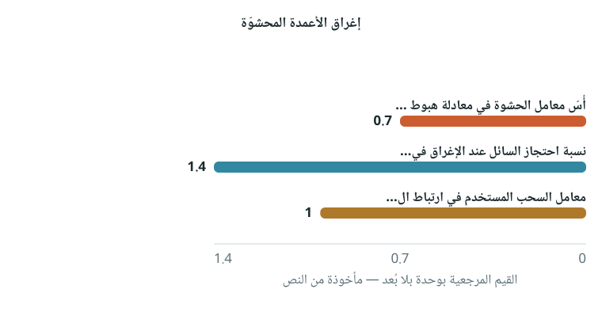

إغراق الأعمدة المحشوّة
Flooding in Packed Columns
حالة تشغيل في العمود المحشوّ يتوقّف عندها التدفّق المتعاكس المستقرّ: يتراكم السائل في الفراغات ويعوق مرور الغاز، فيرتفع هبوط الضغط ارتفاعًا حادًّا مع زيادة طفيفة في الحمل.
الإغراق في العمود المحشوّ هو الحدّ الأعلى لسعة العمود: الحالة التي يتراكم فيها السائل في فراغات الحشوة حتى يعوق مرور الغاز الصاعد، فيتغيّر سلوك العمود تغيّرًا حادًّا. يبدأ الأمر عند نقطة التحميل (loading) التي يزداد بعدها احتجاز السائل بسرعة مع الحمل، ثم يبلغ الإغراق عند تجاوز طاقة استيعاب الحشوة للسائل. ويصف مرجع بيري آليتين: إغراق بالانتزاف (entrainment flooding) حين يرفع الغاز قطرات سائلة كبيرة إلى أعلى، وحدّ النظام (system limit) حين تتجاوز سرعة الغاز الظاهرية سرعة استقرار القطرات الكبيرة، فلا يُعالج الإغراق بتكبير الحشوة أو زيادة المسافة بين الأطباق. وتُحدَّد نقطة الإغراق عمليًّا من هبوط الضغط الحرج: تعطي معادلة كيستر وجيل هبوط الضغط عند بدء الإغراق بدلالة معامل الحشوة، ثم يُقرأ من مخطط هبوط الضغط المعمّم معدّل التدفّق المقابل. وتُقاس السعة بمعامل C-factor المبني على سرعة الغاز الظاهرية وكثافة الطورين. والقيمة حدّ تصميمي لا نقطة تشغيل: يُصمَّم العمود عادةً عند نسبة من سرعة الإغراق، وتزداد حساسية الحشوة للإغراق بسوء توزيع السائل.
كيف تعمل الظاهرة؟
الآلية موازنة بين قوّة الجذب لأسفل وقوّة السحب لأعلى في الفراغات. عند معدّل سائل منخفض يجري السائل في غشاء رقيق على سطح الحشوة ويبقى الفراغ المتاح للغاز واسعًا. وكلّما زاد معدّل السائل زاد احتجازه في الفراغات، فتضيق المساحة الحرة للغاز وترتفع سرعته الفعلية عند ثبات معدّل التدفّق المولي، فيزداد هبوط الضغط. ويستمرّ هذا التراكم حتى تبلغ الحشوة طاقة استيعابها للسائل، فيصير السائل الطور المتّصل في أجزاء من الفراغ ويُحبَس الغاز في جيوب، فيقفز هبوط الضغط قفزة حادّة مع زيادة طفيفة في الحمل. وفي الحدّ الأقصى يرفع الغاز القطرات الكبيرة إلى أعلى بدل أن تترسّب، وهو ما يسمّيه مرجع بيري حدّ النظام.
العلاقة بالأرقام
يُحدَّد الإغراق من هبوط الضغط: ΔP_flood = 0.12·F_p^0.7، حيث F_p بوحدة ft⁻¹ والناتج بوصة ماء لكل قدم حشوة، ويُحوَّل إلى mm ماء بالضرب في 83.31. ويُقرأ بعدها معدّل التدفّق المقابل من مخطط هبوط الضغط المعمّم لإيكرت كما عدّله سترايجل. وتُعبَّر السعة بمعامل C-factor المبني على سرعة الغاز الظاهرية: C_S = u_S·[ρ_G/(ρ_L − ρ_G)]^0.5. ويعطي نموذج ستوبين للحدّ الأقصى C_S,ult = C_S0 − 1.4·L_S، حيث L_S سرعة السائل الظاهرية بوحدة m/s، وC_S0 معامل الإغراق عند معدّل سائل صفري، وثابت الاحتجاز 1.40. ويُصحَّح النموذج عند معدّلات السائل المنخفضة بحدّ أعلى C_S,Limit = 0.8·C_S0.
مفاهيم متقاربة
التمييز الأول: التحميل مقابل الإغراق. في منطقة التحميل يزداد احتجاز السائل وهبوط الضغط أسرع من الخطّ المستقيم، لكن التدفّق يبقى مستقرًّا وقابلًا للوصف بعلاقة أحادية؛ وعند الإغراق تنكسر هذه العلاقة. التمييز الثاني: الإغراق بالانتزاف مقابل حدّ النظام. الأول يحدث حين يرفع الغاز قطرات كبيرة إلى الطبق الأعلى أو أعلى الحشوة، ويُخفَّف بزيادة المسافة بين الأطباق أو باستخدام حشوة أكبر وأكثر انفتاحًا؛ والثاني يحدث حين تتجاوز سرعة الغاز الظاهرية سرعة استقرار القطرات الكبيرة، ولا يُخفَّف بتغيير الحشوة أو المسافة. التمييز الثالث: الإغراق خاصية للحشوة والتدفّق معًا، أما حدّ النظام فدالّة في الخواص الفيزيائية ومعدّل السائل وحده.
حدود التطبيق
الحدّ محسوب من ارتباطات تجريبية لا من نظرية صافية: يذكر مرجع بيري أن انحرافات مخطط هبوط الضغط المعمّم عن القياسات انحرافات منتظمة لا عشوائية، ولذلك يُنصح بتطبيق بيانات كل حشوة على منحنى المخطط الخاص بها. ومعادلة كيستر وجيل لا تصلح للحشوات العشوائية صغيرة السعة من الجيل الأول (F_p > 60 ft⁻¹)، إذ تتجاوز هبوط الضغط المحسوب الحدّ الأعلى للمخطط، وتُستعمل لها علاقة إيكرت الأصلية. والارتباطات كلها تخصّ أنظمة غير راغية؛ والأنظمة الراغية تحتاج معاملات تخفيض إضافية أو تحديد هبوط الضغط عند حدّ أدنى. كما أن سوء توزيع السائل قد يُحدث إغراقًا موضعيًّا قبل أن يظهر في متوسط العمود، فلا يكفي المتوسط للحكم على قرب الإغراق.

| الكمية | القيمة | المصدر |
|---|---|---|
| هبوط الضغط عند بدء الإغراق من معادلة كيستر وجيل | 0.12·F_p^0.7 بوصة ماء لكل قدم حشوة | [1] |
| أُسّ معامل الحشوة في معادلة هبوط ضغط الإغراق | 0.7 بلا بُعد | [1] |
| نسبة احتجاز السائل عند الإغراق في نموذج ستوبين | 1.40 بلا بُعد | [2] |
| معامل السحب المستخدم في ارتباط السعة القصوى | 1.0 بلا بُعد | [2] |
المصادر
- 1 Equipment for Distillation, Gas Absorption, Phase Dispersion, and Phase Separation — Packed Columns — McGraw-Hill — Perry's Chemical Engineers' Handbook, 8th ed., Sec. 14 (2008). people.ysu.edu/~dmprice/CHEN%204887/Packed%20Bed%20flooding.pdf · اطُّلع عليه 2026-11-28
- 2 System Limit: The Ultimate Capacity of Fractionators (Stupin & Kister) — IChemE — Distillation 2002 Proceedings (Institution of Chemical Engineers Symposium Series) (2002). skoge.folk.ntnu.no/prost/proceedings/distillation02/dokument/22-7.pdf · اطُّلع عليه 2026-11-28
استشهد بهذا المصطلح
الصيغتان مبنيتان من بيانات الصفحة نفسها: العنوان والتاريخ ورابط النسخة المنشورة.
إغراق الأعمدة المحشوّة — Flooding in Packed Columns. (2026). ديوان المعرفة — انفراد. https://infiradev.com/diwan/terms/term-flooding-in-packed-columns.html
@misc{term-flooding-in-packed-columns2026,
title = {إغراق الأعمدة المحشوّة},
titleaddon = {Flooding in Packed Columns},
howpublished = {{ديوان المعرفة — انفراد} — مرجع علمي عربي},
year = {2026},
url = {https://infiradev.com/diwan/terms/term-flooding-in-packed-columns.html},
urldate = {2026-11-28},
note = {مراجعة علمية: Abdullah Al-Huwaidi}
}
راجعه: Abdullah Al-Huwaidi · 2026-11-28 · آخر تحديث 2026-11-28